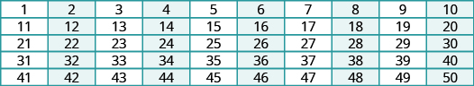
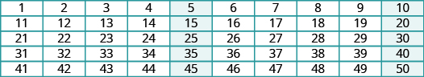
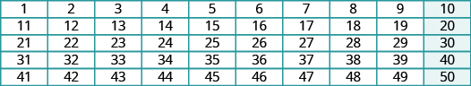
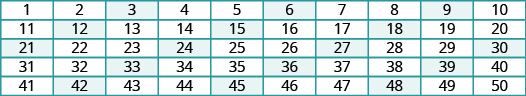

આ સંખ્યાઓનો સરવાળો શોધો: અને જો આ પ્રશ્નનો જવાબ ન મળ્યો હોય, તો ફરી જુઓ સંદર્ભ fs-id4121509.
સંખ્યાઓના અવયવી ઓળખો
ઍની પોતાના કબાટમાંનાં જૂતાં ગણે છે. જૂતાં જોડીમાં ગોઠવેલાં હોવાથી તેને દરેક જૂતું અલગ ગણવું પડતું નથી. તે બે-બેના ક્રમમાં ગણે છે: તેના કબાટમાં છે જૂતાં.
આ સંખ્યાઓ અવયવી કહેવાય આ સંખ્યાના: અવયવી, આ સંખ્યાના: ગણતરીની સંખ્યા અને આ સંખ્યાના ગુણનફળ તરીકે લખી શકાય: પહેલા છ અવયવી, આ સંખ્યાના: નીચે આપેલા છે.
કોઈ સંખ્યાનો અવયવી એ તે સંખ્યા અને ગણતરીની સંખ્યાનું ગુણનફળ છે. એટલે અવયવી, આ સંખ્યાનો: ગણતરીની સંખ્યા અને આ સંખ્યાનું ગુણનફળ હશે: નીચે પહેલા છ અવયવી આપેલા છે, આ સંખ્યાના:
આ પ્રક્રિયા ચાલુ રાખીને કોઈ પણ સંખ્યાના અવયવી શોધી શકીએ. કોષ્ટક fs-id1946698 માં પહેલી બાર ગણતરીની સંખ્યાઓ માટે અવયવી દર્શાવ્યા છે, સંખ્યાઓ થી સુધીના.
ગણતરીની સંખ્યા
સંખ્યાનો અવયવી
કોઈ સંખ્યા અવયવી છે, આ સંખ્યાનો: જો તે ગણતરીની સંખ્યા અને આ સંખ્યાનું ગુણનફળ હોય:
આ સંખ્યાઓના અવયવીની ભાત ઓળખવી: આ અભ્યાસક્રમમાં આગળ જતાં ઉપયોગી થશે.
આકૃતિ 001 માં ગણતરીની સંખ્યાઓ દર્શાવેલી છે, થી અહીં આ સંખ્યાના અવયવી: રંગથી દર્શાવેલા છે. તમને કોઈ ભાત દેખાય છે?

એકથી પચાસ સુધીની સંખ્યાઓનું પાંચ હરોળ અને દસ સ્તંભનું કોષ્ટક. સંખ્યા 2ના અવયવી રંગથી દર્શાવેલા છે.
અવયવી, આ સંખ્યાના: આ બે સંખ્યાઓ વચ્ચે: અને
રંગથી દર્શાવેલી દરેક સંખ્યાનો છેલ્લો અંક જુઓ, આ ચિત્રમાં: આકૃતિ 001 તે છે આ વાત આ સંખ્યા: અને કોઈ પણ ગણતરીની સંખ્યાના ગુણનફળ માટે સાચી છે. તેથી કોઈ સંખ્યા આનો અવયવી છે કે નહીં તે જાણવા: છેલ્લો અંક જુઓ. જો તે હોય, તો સંખ્યા આનો અવયવી છે:
નીચેનામાંની દરેક સંખ્યા આનો અવયવી છે કે નહીં તે નક્કી કરો:
ⓐ
ⓑ
ઉકેલ
ⓐ
શું 489 આ સંખ્યાનો અવયવી છે: 2?
શું છેલ્લો અંક 0, 2, 4, 6, કે 8 છે?
ના.
489 આ સંખ્યાનો અવયવી નથી: 2.
ⓑ
શું 3,714 આ સંખ્યાનો અવયવી છે: 2?
શું છેલ્લો અંક 0, 2, 4, 6, કે 8 છે?
હા.
3,714 આ સંખ્યાનો અવયવી છે: 2.
દરેક સંખ્યા આનો અવયવી છે કે નહીં તે નક્કી કરો:
ⓐ
ⓑ
ⓐ હા
ⓑ ના
દરેક સંખ્યા આનો અવયવી છે કે નહીં તે નક્કી કરો:
ⓐ
ⓑ
ⓐ ના
ⓑ હા
હવે આ સંખ્યાના અવયવી જોઈએ: આકૃતિ 002 માં રંગથી આના બધા અવયવી દર્શાવ્યા છે: આ બે સંખ્યાઓ વચ્ચે: અને તમને શું દેખાય છે આના અવયવીમાં:

એકથી પચાસ સુધીની સંખ્યાઓનું પાંચ હરોળ અને દસ સ્તંભનું કોષ્ટક. સંખ્યા 5ના અવયવી રંગથી દર્શાવેલા છે.
અવયવી, આ સંખ્યાના: આ બે સંખ્યાઓ વચ્ચે: અને
બધા અવયવી, આ સંખ્યાના: અંતે ધરાવે છે અથવા જેમ છેલ્લો અંક જોઈને અવયવી ઓળખીએ છીએ આ સંખ્યાના: તેમ છેલ્લો અંક જોઈને અવયવી ઓળખી શકીએ આ સંખ્યાના: .
નીચેનામાંની દરેક સંખ્યા આનો અવયવી છે કે નહીં તે નક્કી કરો:
ⓐ
ⓑ
ઉકેલ
ⓐ
શું 579 આ સંખ્યાનો અવયવી છે: 5?
શું છેલ્લો અંક 5 કે 0 છે?
ના.
579 આ સંખ્યાનો અવયવી નથી: 5.
ⓑ
શું 880 આ સંખ્યાનો અવયવી છે: 5?
શું છેલ્લો અંક 5 કે 0 છે?
હા.
880 આ સંખ્યાનો અવયવી છે: 5.
દરેક સંખ્યા આનો અવયવી છે કે નહીં તે નક્કી કરો:
ⓐ
ⓑ
ⓐ હા
ⓑ ના
દરેક સંખ્યા આનો અવયવી છે કે નહીં તે નક્કી કરો:
ⓐ
ⓑ
ⓐ ના
ⓑ હા
આકૃતિ 003 માં રંગથી દર્શાવ્યા છે અવયવી, આ સંખ્યાના: આ બે સંખ્યાઓ વચ્ચે: અને બધા અવયવી, આ સંખ્યાના: અંતે શૂન્ય ધરાવે છે.

એકથી પચાસ સુધીની સંખ્યાઓનું પાંચ હરોળ અને દસ સ્તંભનું કોષ્ટક. સંખ્યા 10ના અવયવી રંગથી દર્શાવેલા છે.
અવયવી, આ સંખ્યાના: આ બે સંખ્યાઓ વચ્ચે: અને
નીચેનામાંની દરેક સંખ્યા આનો અવયવી છે કે નહીં તે નક્કી કરો:
ⓐ
ⓑ
ઉકેલ
ⓐ
શું 425 આ સંખ્યાનો અવયવી છે: 10?
શું છેલ્લો અંક શૂન્ય છે?
ના.
425 આ સંખ્યાનો અવયવી નથી: 10.
ⓑ
શું 350 આ સંખ્યાનો અવયવી છે: 10?
શું છેલ્લો અંક શૂન્ય છે?
હા.
350 આ સંખ્યાનો અવયવી છે: 10.
દરેક સંખ્યા આનો અવયવી છે કે નહીં તે નક્કી કરો:
ⓐ
ⓑ
ⓐ ના
ⓑ હા
દરેક સંખ્યા આનો અવયવી છે કે નહીં તે નક્કી કરો:
ⓐ
ⓑ
ⓐ હા
ⓑ ના
આકૃતિ 004 માં રંગથી દર્શાવ્યા છે અવયવી, આ સંખ્યાના: અવયવીની ભાત, આ સંખ્યાના: એટલી સ્પષ્ટ નથી જેટલી આ સંખ્યાઓના અવયવીની ભાત:

એકથી પચાસ સુધીની સંખ્યાઓનું પાંચ હરોળ અને દસ સ્તંભનું કોષ્ટક. સંખ્યા 3ના અવયવી રંગથી દર્શાવેલા છે.
અવયવી, આ સંખ્યાના: આ બે સંખ્યાઓ વચ્ચે: અને
અત્યાર સુધી તપાસેલી અન્ય ભાતથી જુદું, આ ભાતનો સંબંધ છેલ્લા અંક સાથે નથી. અવયવીની ભાત, આ સંખ્યાના: અંકોના સરવાળા પર આધારિત છે. જો સંખ્યાના અંકોનો સરવાળો આનો અવયવી હોય: તો સંખ્યા પોતે પણ આનો અવયવી છે: જુઓ કોષ્ટક fs-id2670625.
આ સંખ્યા લો: તેના અંકો અને છે અને તેમનો સરવાળો કારણ કે અવયવી છે, આ સંખ્યાનો: એટલે આપણે જાણીએ છીએ કે પણ અવયવી છે, આ સંખ્યાનો:
આપેલી દરેક સંખ્યા આનો અવયવી છે કે નહીં તે નક્કી કરો:
ⓐ
ⓑ
ઉકેલ
ⓐ શું અવયવી છે, આ સંખ્યાનો:
અંકોનો સરવાળો શોધો.
શું 15 અવયવી છે, આ સંખ્યાનો: 3?
હા.
ખાતરી ન હોય તો તેના અંકોનો સરવાળો કરીને જાણી શકીએ. ભાગાકારથી ચકાસીએ: 645ને ભાગો 3 વડે.
ભાગફળ છે 215.
ⓑ શું અવયવી છે, આ સંખ્યાનો:
અંકોનો સરવાળો શોધો.
શું 16 અવયવી છે, આ સંખ્યાનો: 3?
ના.
તેથી 10,519 પણ અવયવી નથી આ સંખ્યાનો: 3.
ભાગાકારથી ચકાસી શકીએ: 10,519ને ભાગો 3 વડે.
જ્યારે ભાગીએ ને વડે, ત્યારે ગણતરીની સંખ્યા મળતી નથી. તેથી ગણતરીની સંખ્યા અને આ સંખ્યાનું ગુણનફળ નથી: તે આનો અવયવી નથી:
દરેક સંખ્યા આનો અવયવી છે કે નહીં તે નક્કી કરો:
ⓐ
ⓑ
ⓐ હા
ⓑ ના
દરેક સંખ્યા આનો અવયવી છે કે નહીં તે નક્કી કરો:
ⓐ
ⓑ
ⓐ ના
ⓑ હા
અગાઉનાં કોષ્ટકો ફરી જુઓ, જેમાં રંગથી દર્શાવ્યા હતા અવયવી, આ સંખ્યાના: આ સંખ્યાના: અને આ સંખ્યાના: ધ્યાન આપો કે અવયવી, આ સંખ્યાના: એવી સંખ્યાઓ છે જે આ બંનેના અવયવી છે: અને તેનું કારણ છે તેવી જ રીતે, કારણ કે તેથી અવયવી, આ સંખ્યાના: એવી સંખ્યાઓ છે જે આ બંનેના અવયવી છે: અને
વિભાજ્યતાની સામાન્ય ચાવીઓનો ઉપયોગ કરો
આમ કહેવું કે અવયવી છે, આ સંખ્યાનો: એનો બીજો અર્થ છે કે આ સંખ્યા વડે વિભાજ્ય છે: ખરેખર, છે એટલે છે ધ્યાન આપો, ઉદાહરણ fs-id1585294 માં અવયવી નથી, આ સંખ્યાનો: જ્યારે ભાગ્યું ને વડે, ત્યારે ગણતરીની સંખ્યા ન મળી. તેથી આ સંખ્યા વડે વિભાજ્ય નથી:
વિભાજ્યતા
જો સંખ્યા અવયવી હોય, આ સંખ્યાનો: તો કહીએ કે આ સંખ્યા વડે વિભાજ્ય છે:
ગુણાકાર અને ભાગાકાર વિપરીત ક્રિયાઓ હોવાથી આપણે શોધેલી અવયવીની ભાત વિભાજ્યતાની ચાવી તરીકે વાપરી શકાય. કોષ્ટક fs-id2134771 માં સાર આપેલો છે; વિભાજ્યતાની ચાવીઓ એકથી દસ વચ્ચેની કેટલીક ગણતરીની સંખ્યાઓ માટે દર્શાવેલી છે.
વિભાજ્યતાની ચાવીઓ
સંખ્યા આના વડે વિભાજ્ય છે:
છેલ્લા અંક માટે શરત:
અંકોનો સરવાળો વિભાજ્ય હોવો જોઈએ આના વડે:
છેલ્લા અંક માટે શરત: અથવા
આ બંને વડે વિભાજ્ય હોવું જોઈએ: અને
છેલ્લા અંક માટે શરત:
નક્કી કરો કે આ સંખ્યાઓ વડે વિભાજ્ય છે કે નહીં:
ઉકેલ
કોષ્ટક fs-id1405269 માં વિભાજ્યતાની ચાવીઓ આ સંખ્યાને લાગુ કરી છે: સૌથી જમણા સ્તંભમાં ભાગફળ પૂર્ણ સંખ્યા છે કે નહીં તે જોઈને ચાવીઓનાં પરિણામ ચકાસ્યાં છે.
કોના વડે વિભાજ્ય છે…?
ચાવી
વિભાજ્ય છે?
ચકાસણી
શું છેલ્લો અંક આ છે: હા.
હા
હા.
હા
શું છેલ્લો અંક આ છે: કે હા.
હા
શું છેલ્લો અંક આ છે: હા.
હા
એટલે, આ સંખ્યાઓ વડે વિભાજ્ય છે:
આપેલી સંખ્યા આના વડે વિભાજ્ય છે કે નહીં તે નક્કી કરો:
આ સંખ્યાઓ વડે વિભાજ્ય છે: 2, 3, 5 અને 10
આપેલી સંખ્યા આના વડે વિભાજ્ય છે કે નહીં તે નક્કી કરો:
આ સંખ્યાઓ વડે વિભાજ્ય છે: 2 અને 3; આના વડે નહીં: 5 કે 10.
નક્કી કરો કે આ સંખ્યાઓ વડે વિભાજ્ય છે કે નહીં:
ઉકેલ
કોષ્ટક fs-id1970659 માં વિભાજ્યતાની ચાવીઓ આ સંખ્યાને લાગુ કરી છે: અને ભાગફળ શોધીને પરિણામ ચકાસ્યાં છે.
કોના વડે વિભાજ્ય છે…?
ચાવી
વિભાજ્ય છે?
ચકાસણી
શું છેલ્લો અંક આ છે: ના.
ના
હા.
હા
શું છેલ્લો અંક આ છે: કે હા.
હા
શું છેલ્લો અંક આ છે: ના.
ના
એટલે, આ સંખ્યાઓ વડે વિભાજ્ય છે: અને પરંતુ આના વડે નહીં: કે
આપેલી સંખ્યા વિભાજ્ય છે કે નહીં તે નક્કી કરો,
આ સંખ્યાઓ વડે વિભાજ્ય છે: 2 અને 3; આના વડે નહીં: 5 કે 10.
આપેલી સંખ્યા વિભાજ્ય છે કે નહીં તે નક્કી કરો,
આ સંખ્યાઓ વડે વિભાજ્ય છે: 3 અને 5.
સંખ્યાના બધા અવયવ શોધો
એક જ વિચાર જુદી જુદી રીતે રજૂ કરી શકાય. અત્યાર સુધી જોયું કે જો અવયવી હોય આ સંખ્યાનો: તો કહી શકીએ કે છે વિભાજ્ય આના વડે: આપણે જાણીએ છીએ કે એ ગુણનફળ છે આ બંનેનું: અને એટલે કહી શકીએ કે અવયવી છે આ સંખ્યાનો: અને અવયવી છે આ સંખ્યાનો: એમ પણ કહી શકીએ કે વિભાજ્ય છે આના વડે: અને આના વડે: આ વાત બીજી રીતે કહીએ તો અને અવયવ છે આ સંખ્યાના: જ્યારે લખીએ ત્યારે કહી શકીએ કે આ સંખ્યાનું અવયવીકરણ કર્યું છે:
ચિત્રમાં સમીકરણ 8 ગુણ્યા 9 બરાબર 72 છે. અહીં 8 અને 9ને અવયવ તથા 72ને ગુણનફળ તરીકે નામ આપેલાં છે.
અવયવ
આ પદાવલીમાં: આ બંને: a અને b કહેવાય છે અવયવજો અને બંને a અને b પૂર્ણાંક હોય, તો અવયવ છે આ સંખ્યાના: અને ગુણનફળ છે આ બંનેનું:
બીજગણિતમાં સંખ્યાના બધા અવયવ શોધવા ઉપયોગી થઈ શકે. તેને સંખ્યાનું અવયવીકરણ કહે છે અને તે અનેક પ્રકારના પ્રશ્નો ઉકેલવામાં મદદરૂપ થાય છે.
હાથથી સામગ્રી ગોઠવીને ગણિત સમજવાની “ગુણાકાર અને અવયવીકરણના નમૂના બનાવો” પ્રવૃત્તિ કરવાથી ગુણાકાર અને અવયવીકરણની વધુ સારી સમજ મળશે.
ધારો કે નૃત્યનિર્દેશક બેલેના કાર્યક્રમ માટે નૃત્ય ગોઠવે છે. નર્તકોની સંખ્યા છે અને ચોક્કસ દૃશ્ય માટે નૃત્યનિર્દેશક મંચ પર નર્તકોને સમાન કદનાં જૂથમાં ગોઠવવા માગે છે.
નર્તકોને સમાન કદનાં જૂથમાં કેટલી રીતે ગોઠવી શકાય? આ પ્રશ્નનો જવાબ આપવો એટલે આ સંખ્યાના અવયવ ઓળખવા: કોષ્ટક fs-id1406287 માં નર્તકોને ગોઠવવાની જુદી જુદી રીતોનો સાર આપ્યો છે.
જૂથની સંખ્યા
દરેક જૂથમાં નર્તકો
કુલ નર્તકો
આ કોષ્ટકમાં કઈ ભાત દેખાય છે: કોષ્ટક fs-id1406287? શું તમે નોંધ્યું કે જૂથની સંખ્યાને દરેક જૂથમાંના નર્તકોની સંખ્યા વડે ગુણતાં હંમેશાં મળે તે યોગ્ય છે, કારણ કે હંમેશાં નર્તકો હોય છે.
પહેલા બે સ્તંભ ધ્યાનથી જોતાં બીજી ભાત પણ દેખાય. બંને સ્તંભમાં બરાબર એ જ સંખ્યાઓ છે, પરંતુ ઊલટા ક્રમમાં. તેઓ એકબીજાના અરીસા જેવા છે. ખરેખર, બંનેમાં આ સંખ્યાના બધા અવયવ છે: જે આ છે:
કોઈ પણ ગણતરીની સંખ્યાના બધા અવયવ શોધવા, તેને ગણતરીની દરેક સંખ્યા વડે ક્રમશઃ ભાગીએ; પહેલી ભાજક સંખ્યા છે જો ભાગફળ પણ ગણતરીની સંખ્યા હોય, તો ભાજક અને ભાગફળ આપેલી સંખ્યાના અવયવ છે. ભાગફળ ભાજક કરતાં નાનું થાય ત્યારે અટકી શકીએ.
ગણતરીની સંખ્યાના બધા અવયવ શોધો.
ભાગફળ ભાજક કરતાં નાનું થાય ત્યાં સુધી, ગણતરીની દરેક સંખ્યા વડે ક્રમશઃ આપેલી સંખ્યાને ભાગો.
જો ભાગફળ ગણતરીની સંખ્યા હોય, તો ભાજક અને ભાગફળ અવયવની જોડી છે.
જો ભાગફળ ગણતરીની સંખ્યા ન હોય, તો ભાજક અવયવ નથી.
અવયવની બધી જોડીઓની યાદી બનાવો.
બધા અવયવ નાનાથી મોટા ક્રમમાં લખો.
આ સંખ્યાના બધા અવયવ શોધો:
ઉકેલ
ભાગો ને ગણતરીની દરેક સંખ્યા વડે; પહેલી ભાજક સંખ્યા છે જો ભાગફળ પૂર્ણ સંખ્યા હોય, તો ભાજક અને ભાગફળ અવયવની જોડી છે.
પછીની હરોળમાં ભાજક હશે અને ભાગફળ ભાગફળ ભાજક કરતાં નાનું હશે, તેથી અટકીએ. ચાલુ રાખીએ તો એ જ અવયવ ફરી ઊલટા ક્રમમાં મળશે. બધા અવયવ નાનાથી મોટા ક્રમમાં લખતાં મળે
આપેલી સંખ્યાના બધા અવયવ શોધો:
1, 2, 3, 4, 6, 8, 12, 16, 24, 32, 48, 96
આપેલી સંખ્યાના બધા અવયવ શોધો:
1, 2, 4, 5, 8, 10, 16, 20, 40, 80
અવિભાજ્ય અને સંયુક્ત સંખ્યાઓ ઓળખો
કેટલીક સંખ્યાઓ, જેમ કે ના ઘણા અવયવ હોય છે. બીજી સંખ્યાઓ, જેમ કે ના માત્ર બે અવયવ હોય છે: અને તે સંખ્યા પોતે. માત્ર બે અવયવ ધરાવતી સંખ્યાને કહે છે અવિભાજ્ય સંખ્યા; બે કરતાં વધુ અવયવ ધરાવતી સંખ્યાને કહે છે સંયુક્ત સંખ્યા (વિભાજ્ય સંખ્યા). સંખ્યા અવિભાજ્ય પણ નથી અને સંયુક્ત પણ નથી. તેનો એક જ અવયવ છે: તે પોતે.
અવિભાજ્ય સંખ્યાઓ અને સંયુક્ત સંખ્યાઓ
અવિભાજ્ય સંખ્યા એ કરતાં મોટી ગણતરીની સંખ્યા છે, જેના અવયવ માત્ર અને તે પોતે હોય છે.
જે ગણતરીની સંખ્યા અવિભાજ્ય ન હોય તે સંયુક્ત સંખ્યા છે.
આકૃતિ 014 માં ગણતરીની સંખ્યાઓ થી સુધીની, તેમના અવયવ સાથે આપેલી છે. રંગથી દર્શાવેલી સંખ્યાઓ અવિભાજ્ય છે, કારણ કે દરેકના માત્ર બે અવયવ છે.
2થી 20 સુધી અવિભાજ્ય અને સંયુક્ત સંખ્યાઓ
સંખ્યા
અવયવ
અવિભાજ્ય કે સંયુક્ત?
સંખ્યા
અવયવ
અવિભાજ્ય કે સંયુક્ત?
2
1, 2
અવિભાજ્ય
12
1, 2, 3, 4, 6, 12
સંયુક્ત
3
1, 3
અવિભાજ્ય
13
1, 13
અવિભાજ્ય
4
1, 2, 4
સંયુક્ત
14
1, 2, 7, 14
સંયુક્ત
5
1, 5
અવિભાજ્ય
15
1, 3, 5, 15
સંયુક્ત
6
1, 2, 3, 6
સંયુક્ત
16
1, 2, 4, 8, 16
સંયુક્ત
7
1, 7
અવિભાજ્ય
17
1, 17
અવિભાજ્ય
8
1, 2, 4, 8
સંયુક્ત
18
1, 2, 3, 6, 9, 18
સંયુક્ત
9
1, 3, 9
સંયુક્ત
19
1, 19
અવિભાજ્ય
10
1, 2, 5, 10
સંયુક્ત
20
1, 2, 4, 5, 10, 20
સંયુક્ત
11
1, 11
અવિભાજ્ય
બે થી વીસની સંખ્યાઓ, તેમના અવયવ અને અવિભાજ્ય કે સંયુક્ત વર્ગ દર્શાવતું બે પેનલનું કોષ્ટક. અવિભાજ્ય સંખ્યાના નંબરવાળા ખાના આછા રાખોડી-વાદળી છે. પંદરના અવયવમાં બે નથી.
ગણતરીની સંખ્યાઓ થી સુધીના અવયવ; અવિભાજ્ય સંખ્યાઓ રંગથી દર્શાવેલી છે
આનાથી નાની અવિભાજ્ય સંખ્યાઓ: છે મોટી અવિભાજ્ય સંખ્યાઓ પણ ઘણી છે. સંખ્યા અવિભાજ્ય છે કે સંયુક્ત તે નક્કી કરવા, આ સિવાય તેનો કોઈ અવયવ છે કે નહીં તે જોવું પડે: અને તે પોતે. આ માટે નાની અવિભાજ્ય સંખ્યાઓને ક્રમશઃ તપાસીએ કે તે આપેલી સંખ્યાનો અવયવ છે કે નહીં. જો તેમાંથી કોઈ અવયવ ન હોય, તો આપેલી સંખ્યા પણ અવિભાજ્ય છે.
સંખ્યા અવિભાજ્ય છે કે નહીં તે નક્કી કરો.
દરેક અવિભાજ્ય સંખ્યા આપેલી સંખ્યાનો અવયવ છે કે નહીં તે ક્રમશઃ ચકાસો.
શરૂઆત કરો થી અને ભાગફળ ભાજક કરતાં નાનું થાય કે અવિભાજ્ય અવયવ મળે ત્યારે અટકો.
જો સંખ્યાનો અવિભાજ્ય અવયવ હોય, તો તે સંયુક્ત સંખ્યા છે. જો તેનો કોઈ અવિભાજ્ય અવયવ ન હોય, તો સંખ્યા અવિભાજ્ય છે.
દરેક સંખ્યા અવિભાજ્ય છે કે સંયુક્ત તે ઓળખો:
ⓐ
ⓑ
ઉકેલ
ⓐ દરેક અવિભાજ્ય સંખ્યા આ સંખ્યાનો અવયવ છે કે નહીં તે ક્રમશઃ ચકાસો: ; શરૂઆત કરો થી, બતાવ્યા પ્રમાણે. ભાગફળ ભાજક કરતાં નાનું થાય ત્યારે અટકીશું.
અવિભાજ્ય સંખ્યા
ચાવી
આનો અવયવ છે:
છેલ્લો અંક, આ સંખ્યાનો: આ નથી:
ના.
અને આના વડે વિભાજ્ય નથી:
ના.
છેલ્લો અંક, આ સંખ્યાનો: આ નથી: કે
ના.
ના.
ના.
અહીં પહોંચતાં અટકી શકીએ: કારણ કે ભાગફળ ભાજક કરતાં નાનું છે.
કોઈ અવિભાજ્ય સંખ્યા અવયવ તરીકે ન મળી, આ સંખ્યાની: તેથી જાણીએ છીએ કે અવિભાજ્ય છે.
ⓑ દરેક અવિભાજ્ય સંખ્યા ક્રમશઃ તપાસો કે તે અવયવ છે કે નહીં, આ સંખ્યાનો:
અવિભાજ્ય સંખ્યા
ચાવી
આનો અવયવ છે:
છેલ્લો અંક આ નથી:
ના.
અને આના વડે વિભાજ્ય નથી:
ના.
છેલ્લો અંક આ નથી: કે
ના.
હા.
કારણ કે આ સંખ્યા વડે વિભાજ્ય છે: તેથી તે અવિભાજ્ય નથી. તે સંયુક્ત છે.
સંખ્યા અવિભાજ્ય છે કે સંયુક્ત તે ઓળખો:
સંયુક્ત
સંખ્યા અવિભાજ્ય છે કે સંયુક્ત તે ઓળખો:
અવિભાજ્ય
સાક્ષરતા સાથે જોડતી પ્રવૃત્તિઓ વન હન્ડ્રેડ હંગરી ઍન્ટ્સ, સ્પન્કી મન્કીઝ ઑન પરેડ અને અ રિમેઇન્ડર ઑફ વન આ વિભાગના વિષયોનો બીજો દૃષ્ટિકોણ આપશે.
નીચેના અભ્યાસમાં આપેલી સંખ્યા અવિભાજ્ય છે કે સંયુક્ત તે નક્કી કરો.
અવિભાજ્ય
સંયુક્ત
અવિભાજ્ય
સંયુક્ત
સંયુક્ત
સંયુક્ત
રોજિંદા જીવનમાં ગણિત
બૅન્ક વ્યવહાર ફ્રૅન્કને હાઇસ્કૂલનું ભણતર પૂરું કરતાં તેની દાદીમાએ આપ્યા ; ખર્ચી નાખવાને બદલે તેણે બૅન્કમાં ખાતું ખોલ્યું. દર અઠવાડિયે તે ઉમેરતો ખાતામાં. કોષ્ટક દરેક અઠવાડિયાના અંત સુધીમાં ફ્રૅન્કે ખાતામાં મૂકેલી કુલ રકમ દર્શાવે છે. ખાલી જગ્યાઓ ભરીને કોષ્ટક પૂરું કરો.
ભણતર પૂરું થયા પછીનાં અઠવાડિયાં
ફ્રૅન્કે ખાતામાં મૂકેલા કુલ ડૉલર
સરળ કરેલો સરવાળો
ફ્રૅન્કના બેંક ખાતાનો પૂર્ણ ઉકેલ
ભણતર પૂરું થયા પછીનાં અઠવાડિયાં
ફ્રૅન્કે ખાતામાં મૂકેલા કુલ ડૉલર
સરળ કરેલો સરવાળો
0
100
100
1
100 + 15
115
2
100 + 15 · 2
130
3
100 + 15 · 3
145
4
100 + 15 · 4
160
5
100 + 15 · 5
175
6
100 + 15 · 6
190
20
100 + 15 · 20
400
x
100 + 15 · x
100 + 15x
ફ્રૅન્કના ખાતામાં શરૂઆતમાં સો ડૉલર અને દર અઠવાડિયે પંદર ડૉલર ઉમેરાય છે. શીર્ષક સહિત દસ હરોળનું સંપૂર્ણ જવાબનું કોષ્ટક; x અઠવાડિયે કુલ 100 + 15x ડૉલર.
બૅન્ક વ્યવહાર માર્ચમાં જીનાએ પોતાની બૅન્કમાં ક્રિસમસ ક્લબનું બચત ખાતું ખોલ્યું. તેણે જમા કર્યા ખાતું ખોલવા માટે. દર અઠવાડિયે તે ઉમેરતી ખાતામાં. કોષ્ટક દરેક અઠવાડિયાના અંત સુધીમાં જીનાએ ખાતામાં મૂકેલી કુલ રકમ દર્શાવે છે. ખાલી જગ્યાઓ ભરીને કોષ્ટક પૂરું કરો.
ખાતું ખોલ્યા પછીનાં અઠવાડિયાં
જીનાએ ખાતામાં મૂકેલા કુલ ડૉલર
સરળ કરેલો સરવાળો
લેખન અભ્યાસ
જો સંખ્યા આના વડે વિભાજ્ય હોય: અને આના વડે: તો તે આના વડે પણ વિભાજ્ય કેમ હોય:
અવિભાજ્ય સંખ્યાઓ અને સંયુક્ત સંખ્યાઓ વચ્ચે શું તફાવત છે?
સ્વમૂલ્યાંકન
ⓐ અભ્યાસ પૂરો કર્યા પછી આ ચકાસણીપત્રકથી વિભાગના હેતુઓમાં તમારું પ્રભુત્વ તપાસો.
હું કરી શકું છું…
આત્મવિશ્વાસથી
થોડી મદદથી
ના—મને સમજાતું નથી!
સંખ્યાઓના અવયવી ઓળખવા.
વિભાજ્યતાની સામાન્ય ચાવીઓ વાપરવી.
સંખ્યાના બધા અવયવ શોધવા.
અવિભાજ્ય અને સંયુક્ત સંખ્યાઓ ઓળખવી.
સંખ્યાઓ વિશેની ગાણિતિક કુશળતાનું સ્વમૂલ્યાંકન કોષ્ટક: અવયવી ઓળખવા, વિભાજ્યતાની ચાવીઓ વાપરવી, અવયવ શોધવા તથા અવિભાજ્ય અને સંયુક્ત સંખ્યાઓ ઓળખવી. વિદ્યાર્થીઓ પોતાની સમજનું મૂલ્યાંકન કરે છે.
ⓑ તપાસયાદીમાં આપેલા તમારા જવાબોને આધારે, 1–10ના માપક્રમ પર આ વિભાગમાં તમારી નિપુણતાને કેટલો ગુણ આપશો? તમે તેમાં કેવી રીતે સુધારો કરી શકો?
શબ્દાર્થ
સંખ્યાનો અવયવી
કોઈ સંખ્યા આનો અવયવી છે: જો તે ગણતરીની સંખ્યા અને આ સંખ્યાનું ગુણનફળ હોય: .
વિભાજ્યતા
જો સંખ્યા આનો અવયવી હોય: તો કહીએ કે આના વડે વિભાજ્ય છે: .
અવિભાજ્ય સંખ્યા
અવિભાજ્ય સંખ્યા એ 1 કરતાં મોટી એવી ગણતરીની સંખ્યા છે જેના અવયવ માત્ર 1 અને તે સંખ્યા પોતે હોય છે.
સંયુક્ત સંખ્યા
જે ગણતરીની સંખ્યા અવિભાજ્ય ન હોય તે સંયુક્ત સંખ્યા છે.